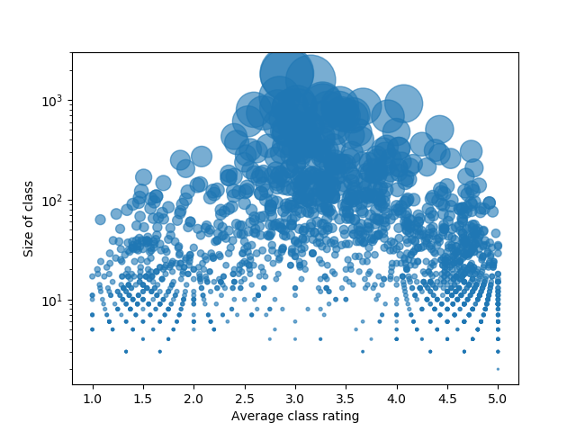
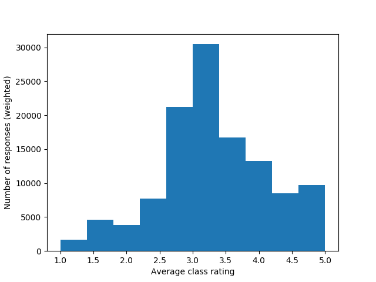
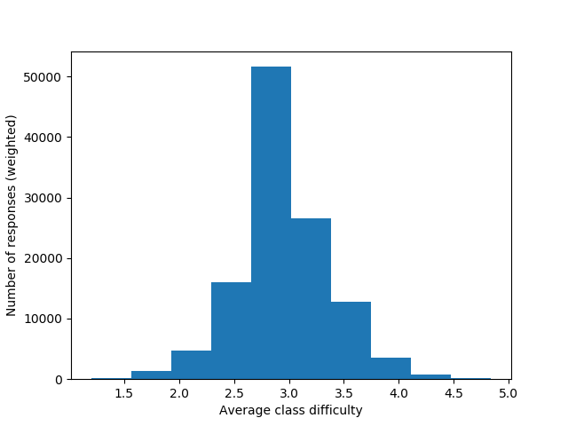

Our full dataset can be found at: https://drive.google.com/open?id=1ZqAqhDke_2B_E-Ht4_wR9IT9ujbMAyKRA
A sample of our dataset an be found at sample.json
This data was scraped from the Critical Review using the Python requests library with a session ID (since we needed to be logged in to view the data) as well as beautiful soup for parsing. The source is from the Critical Review, and the purpose of our project is to analyze the data from the Critical Review to determine what factors students use to rate classes, so this source is about as reputable as we can expect. That being said, this data is not truly ideal, since we would prefer to be looking at data that connected with a student across multiple classes, and one that does not have sampling bias, but this is pretty much the closest thing. To generate the sample, we took some of the data from the CSCI department. The sample is relatively large, as we feel like this gives the best idea of the scope of the project. However, since the data is from one department, the data may be skewed if students rate computer science classes differently compared to other classes. However, we felt that this sample was a good sample for submission because the TAs and instructors viewing this data would be most familiar with the computer science department at Brown. When collecting the data, one consideration that we considered was how ethical scraping the data is. However, we consulted the head TAs on the matter, who decided it was ethical.
The data is relatively clean, especially for reviews that have been gathered in the recent past. As the data gets older, however, format changes and quantity of data declines, so it may be the case that we are unable to use data past a certain age. Furthermore, none of the fields are truly required, so in many cases there are empty strings in the place review data. The data is sufficient to complete our project and in many ways extend it; we discovered that the data on the website are arranged in such a way that we have strong evidence that each index corresponds to one student in the class. This can allow us to account for if the student is a concentrator or non-concentrator, the student’s expected grade, and the student’s year. We had a total of 139632 ratings, which each rating corresponding to a student’s set of responses in a single course. There are many departments, but as an example the CSCI department has 12085 ratings, and the ENGL department has 2552. There departments obviously range in size a great deal, but we believe there are sufficient reviews in each department to draw our conclusions. There are many missing values, as none of the fields are actually required (though of course totally empty indices have been omitted). These do occur in fields important to project goals, but many of the statistics we seek to measure can be gathered in aggregate for each class, so it does not matter so much that we are missing data in one index for one question. However, we do seek to do multiple correlation to predict, among other things, a student’s rating of a course based on their other responses, so missing values in that case will cause us to discard that student’s data. The data should be sufficient to do what we sought out to do: compare and rank how difficult and time-consuming students believe their department to be (we expect CS to rank #1 in this category), making use of the fact that we know whether a particular index is or is not a concentrator in the department, so we can measure the delta in difficulty rating between concentrators and non-concentrators for each department. There are no duplicates in the data. The data is distributed in many different ways across the classes; some are skewed high in difficulty and some low. As far as class ratings alone, the data among all departments show that ratings are mostly uniform:
 We see, however, that at small class sizes there appears to be a bimodal distribution. For difficulty, the ratings are even more uniform:
There are certainly outliers; for one student in CSCI 2240, the maximum hours per week was ‘INFINITE,’ so we will probably not be using their data. The minimum average difficulty for a class was 1.2; The max, 4.84. The data in most cases is constrained to have a value between 1 and 5, hours notwithstanding. There are several data type issues. Within one year, the format is relatively static, but even in one format whenever the data is not constrained to a 1-5 scale (such as for min and max hours) students are allowed to input whatever they want (including nothing), so the fields are not strictly numeric. We will ignore any non-numeric fields in areas where numeric inputs are expected. We will throw away non-numeric data, as previously discussed, as well as data that shares an index with missing or corrupted data in the same class (i.e. if an index has any bad data, we will throw out the index). This may reduce more extreme numbers, since students who use non-numeric values are often expressing extreme opinions (i.e. infinity). However, we believe that this is very rare and should not affect overall results. More importantly, we will likely throw out data that has an old enough format that we cannot realistically translate it to our format. This may make it difficult to track opinions on classes far into the past.
Much of our challenges come from how messy this data is; changing formats, lack of responses, and unfixed user inputs means that making use of all of our data will be difficult, especially for temporal correlations. We have observed that the critical review website’s data does contain some very helpful information: namely, it preserves the index of a response for any particular student, which will make it possible to do much more in-depth data analysis. We will proceed to clean our data and unify formatting wherever possible, and begin running our comparisons between the departments, looking at the average difficulty of courses in each department for concentrators and non-concentrators and their hours spent. We plan on using a fixed effect linear regression to test the correlations between the data in order to account for possible omitted variable bias, such as students rating computer science classes differently than how they would rate English classes.